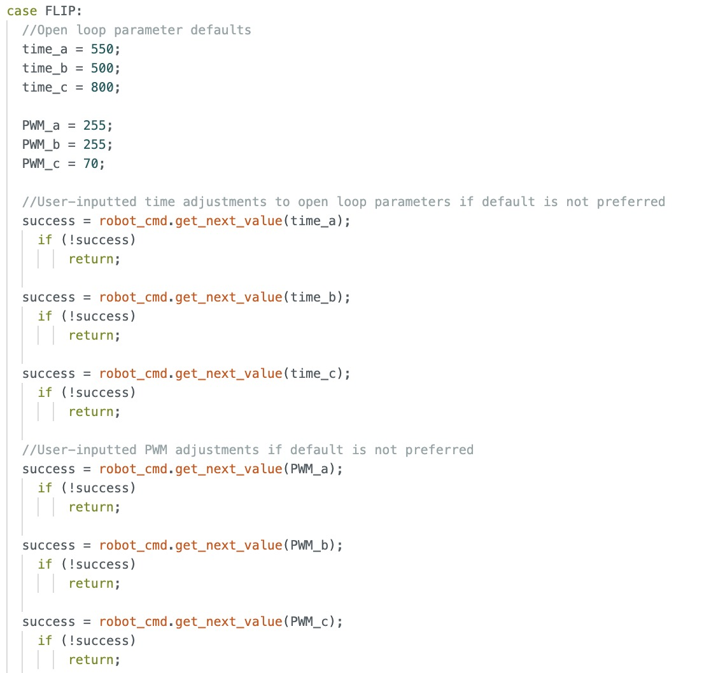
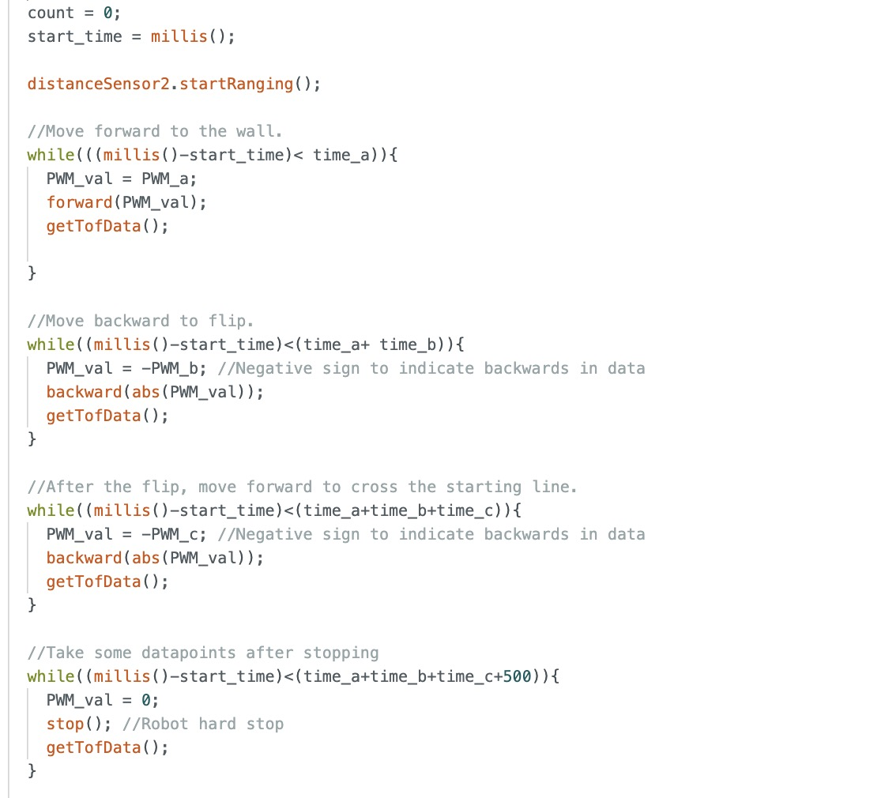
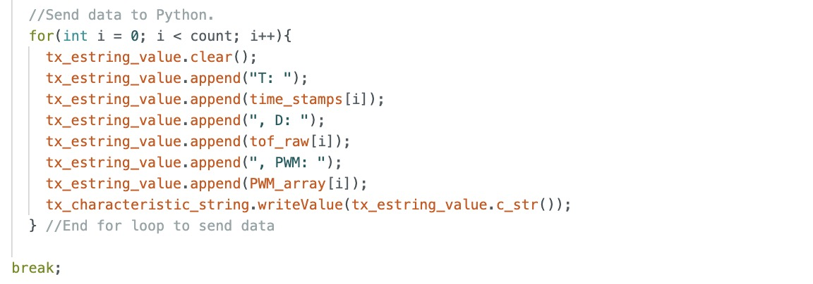
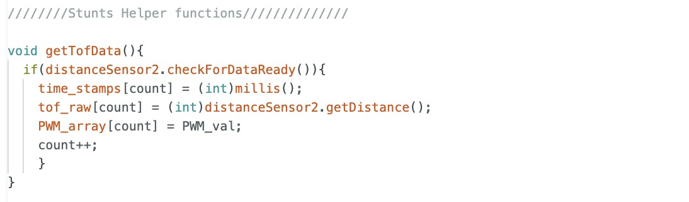
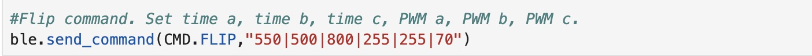
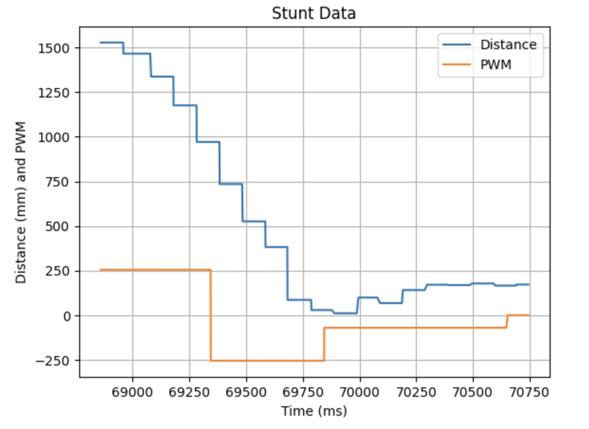
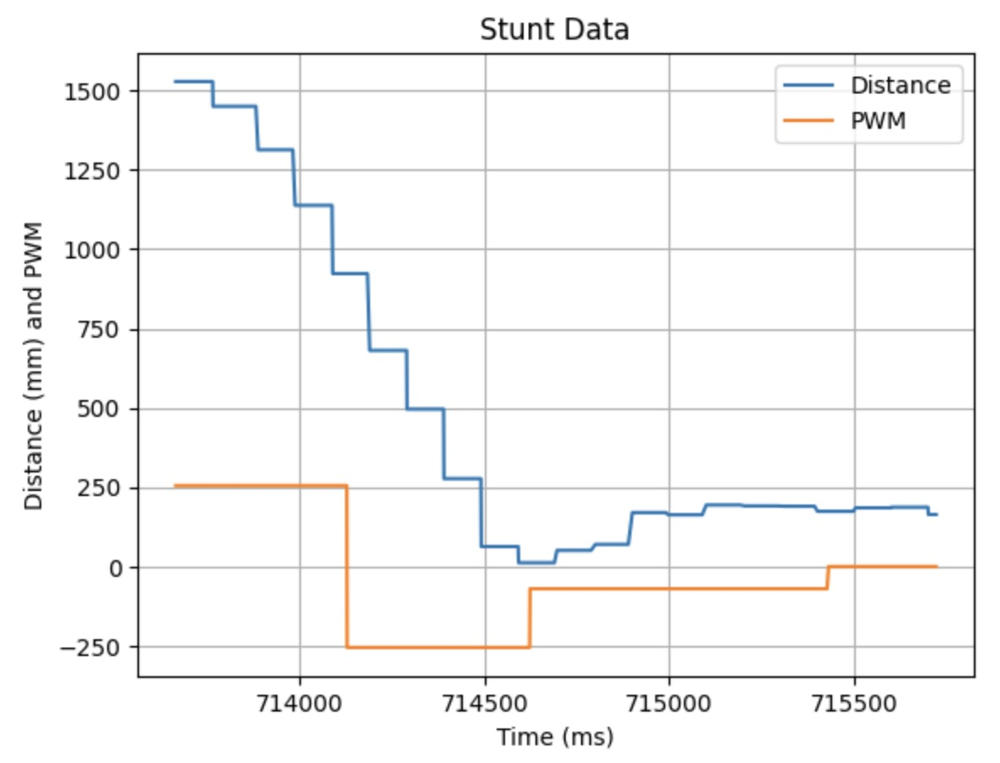
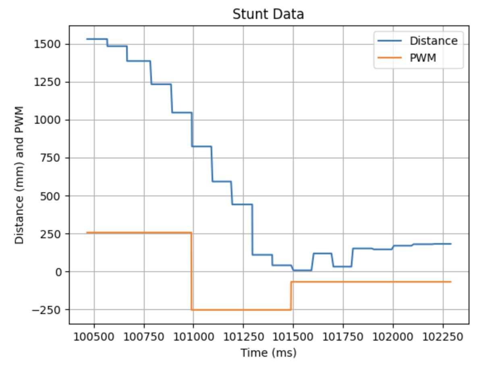

Lab 8: Stunts
In this lab, the robot begins on a starting line 1.5 m away from the wall, moves forward until it is ~1ft from the wall, performs a flip, and then drives back through the starting line.
Note: In previous years, students were required to perform the stunt on the lab track. However, since this lab coincided with spring break, Professor Helbling allowed us to complete it at home instead.
Flip Implementation
Although linear PID could have been used for this stunt, I opted for open-loop control. I programmed the robot to accelerate forward at full speed, then immediately reverse at full speed to build the momentum needed for the flip. After the flip, the robot is inverted, so to make it move forward and return to the starting line, I still issue the backward command and use a lower PWM. Additionally, my lab 4 component layout decision of placing both batteries at the front of the car provided a forward weight distribution, which made the open-loop flip effective.
On the Arduino side, I wrote a Bluetooth FLIP command that executes the flip stunt and allows me to adjust the open-loop parameters in each run until I found ones that worked. After testing, I finalized the open-loop parameters that consistently produced reliable results and used the same ones for each run in the command call from my Python script.
Arduino Code:   
Helper Function For Storing data: 
Python Command: 
Flip Videos
Flip Run 1
Stunt Completion Time: 1.93s

Flip Run 2
Stunt Completion Time: 2.08s

Flip Run 3
Stunt Completion Time: 2.00s

Note: In all the demo graphs, the data for the return trip after the flip are inaccurate because there is a window that reaches down to the ground behind my setup (picture shown below). I figured the return data, was not important since the robot just needed to cross the line to finish the stunt and I used open loop all the way through. If I needed more accurate return data, I would have bought another poster board.

Bloopers
References
I referenced Wenyi’s page. I discussed ideas with Becky and Akshati.